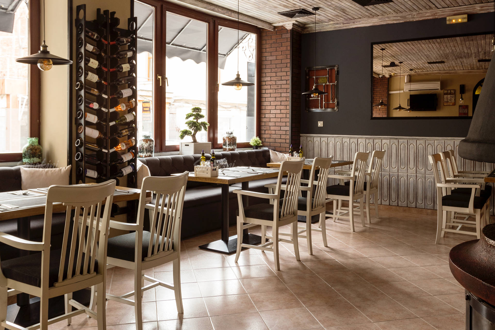
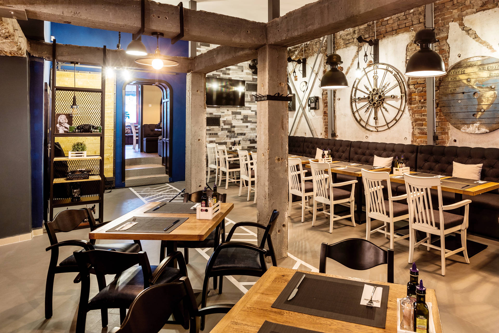

Визия

Нашето разбиране, че всичко може да се подобри, ни мотивира ежедневно да търсим нови предизвикателства и да усъвършенстваме вкусовите емоции, които ти предлагаме. Oбещаваме непрестанно да търсим възможности за подобряване на ястията ни и да внасяме в менюто си нови и интересни съставки, които да разнообразят вкусовите ти усещания. Надяваме се заедно да откриваме нови преживявания.
Интериор

При създаването на ресторанта се колебаехме между грубия индустриален стил, който фокусира вниманието върху самата кухня и смесица между български и европейски старинен стил. В крайна сметка решихме, че най-добрият вариант би бил да предложим на теб да избереш кой от двата ти харесва най-много. В резултат на това, ресторантът е разделен на две основни зали: груба индустриална и уютна старинна.